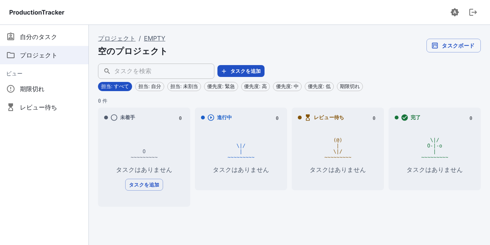

UI の決めごと表
設計書(§3.1・カンバン追補)の決めごとを、実装した値で固定する。値の出どころは
frontend/src/styles/_tokens.scss(Sass → CSS 変数 --pt-*)。MUI のテーマも同じ値を使う。
注: 設計書が参照している
UI_DESIGN_PRINCIPLES_2026-10.md(P1〜P10)はこのリポジトリに無く、中身を確認できていない。 ここでは設計書本文に書かれている P1・P6・P9 と、パーツ番号(01 モーダル・02 ドロワー・03 スタッガー・08 トースト・13 チップ・21 スケルトン・23 バッジ・24 エンプティステート)の記述だけを根拠にしている。
基本(P1)
| 項目 | 決め | 実装 |
|---|---|---|
| アイコン | @mui/icons-material の 1 セットのみ |
domain/status.tsx |
| 状態の表示 | 色 + アイコン + 文字の 3 点セット(色は補助) | StatusLabel / VersionStatusLabel |
| 日付 | 2026-10-11(日時は 2026-10-11 09:30) |
domain/format.ts |
| 数字 | 等幅(.num: ui-monospace + tabular-nums) |
global.scss |
| 余白 | 4px 単位 | $space |
| 角丸 | 8px | $radius |
| フォント | 日本語の OS 標準 → system-ui(外部フォントは読み込まない) | $font-sans |
状態
| 状態 | 文字 | アイコン | 色トークン(ライト → ダーク) |
|---|---|---|---|
| todo | 未着手 | RadioButtonUnchecked | status-todo #525c6e → #b4bdcd |
| in_progress | 進行中 | PlayCircleOutline | status-in-progress #1b5fc9 → #86b4ff |
| review | レビュー待ち | HourglassTop | status-review #85550a → #f0c36d |
| done | 完了 | CheckCircle | status-done #17743a → #6fd195 |
| 期限切れ | 「期限切れ」+ 日付 | ErrorOutline | danger #b3261e → #ff9a92 |
- 版の状態: 作成中(EditNote)/ 提出済み(Send)/ 承認(CheckCircle)/ 却下(Cancel)。
- 優先度: 緊急(KeyboardDoubleArrowUp)/ 高(KeyboardArrowUp)/ 中(Remove)/ 低(KeyboardArrowDown)。アイコン + 文字。
- 積み上げバーはセグメントの境目に線を入れ、凡例に件数を併記する(色を消しても読める)。
色とコントラスト
全ての文字色・状態色は、背景(bg / surface / surface-2)に対して 4.5:1 以上(WCAG AA)。
ライト・ダークとも計算で確認済み(実装時に 8 色 × 3 背景 × 2 テーマを計算)。
| トークン | ライト | ダーク |
|---|---|---|
| bg | #f4f6f9 | #12151b |
| surface | #ffffff | #1b2029 |
| surface-2 | #eceff4 | #252b36 |
| text | #1b1f27 | #e8ebf1 |
| text-muted | #4f5a6b | #aab3c2 |
| border | #ccd2dc | #3a4252 |
| primary | #2150c4 | #8fb0ff |
テーマ
- ライト / ダーク / OS に合わせる(既定)。ヘッダーのボタンで順に切り替え、
localStorageに保存(使えない環境でも動く)。 - 切り替えは
<html data-theme="light|dark">。「OS に合わせる」では属性を外し、prefers-color-schemeで決まる。
画面構成(P6 ワークスペース型)
- ≥1100px: 左 アセット一覧(240px)/ 中央 タブ / 右 サマリ(280px)。それ未満は縦に積む。
- かんばん: ≥900px で 4 列、それ未満は 1 列に積む(幅 360px でも横スクロールなしを全画面で確認)。
- 一覧の行 = 記号(プロジェクトは頭 2 文字)+ 名前 + 副題(期日など)+ 右端に値。
パーツ・動き
| 種別 | 使い方 |
|---|---|
| ドロワー(02) | カード/行をクリック → 右からタスク詳細(版・ノート・品質)。URL ?task=ID で共有でき、Esc / 戻るで閉じる |
| チップ(13) | 担当・優先度・期限切れの絞り込み。押下状態を aria-pressed で示す。「条件をリセット」付き |
| バッジ(23) | 列ごとの件数、ナビの「自分の期限切れ」件数 |
| トースト(08) | 遷移の成功と、拒否された理由(サーバーの detail をそのまま表示) |
| モーダル(01) | 「完了」にする前の確認。版が無ければ警告 |
| スケルトン(21) | 読み込み中。本物の行/カードと同じ形の灰色の枠 |
| エンプティステート(24) | 「〜はありません」+ 次の操作ボタン |
| スタッガー(03) | かんばんの初回表示のカード(1 回だけ。0.8 秒後に解除) |
| ドラッグ中 | 傾き 2° + 影、元の位置は半透明、ドロップ先の列は枠線で強調。prefers-reduced-motion では傾けない |
ASCII モチーフ「植物の成長」(設計書 追補 2026-10-27)
工程の状態を、植物の成長(種 → 芽 → 花 → 実)に対応づけた、空・待機の状態だけの飾り。
| 状態 | 段階 | 絵(2 コマの 1 コマ目) |
|---|---|---|
| 未着手 | 種 | o |
| 進行中 | 芽 | \ / / ` |
| レビュー待ち | 花 | (*) / ` |
| 完了 | 実 | |/ / ` o- |
| 決め | 実装 |
|---|---|
| 出す場所 | 空の列(かんばん)だけ。EmptyState の motif に渡す。本文・操作部品・見出し・ナビには出さない |
| 色 | 既存の状態トークンのみ(--pt-status-*)。新色は足さない |
| 読み上げ | 飾りなので aria-hidden。意味は隣の文字(「タスクはありません」)が持つ。選択・クリックの対象にしない |
| 動き | 2 コマを 0.9 秒ごとに切り替え(揺れる / 脈打つ)。prefers-reduced-motion では静止画 1 枚。タブが隠れている間は止める |
| 文字 | ASCII のみ(絵文字・全角なし)。全コマ 幅 9 × 高さ 4 でそろえ、揺れても位置が動かない |
| 場所 | domain/motif.ts(コマと対応表)、components/AsciiPlant.tsx |

かんばんの操作の流れ
ドラッグに頼らない操作
- カードの「⋮」→「状態を変更」メニュー(タッチ・キーボード・スクリーンリーダー向け)。
- カードにフォーカス →
Shift + ←/→で隣の列へ、Enterで詳細。 - どの操作も同じ処理に流れ、遷移の可否はサーバーが判断する。拒否されたら元の列へ戻してトーストで理由を出す。
注記(P9)
品質・画面差分のタブには「取得日時」を固定表示する(スキャン実行の日時と取り込み日時)。画面差分は撮影条件(解像度・固定時刻・シード)も固定表示する。